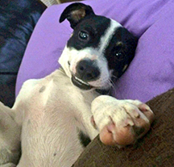
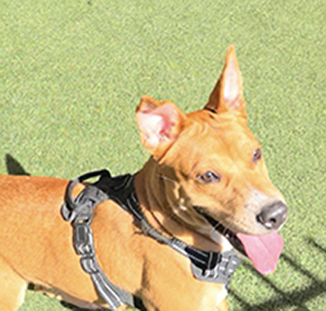
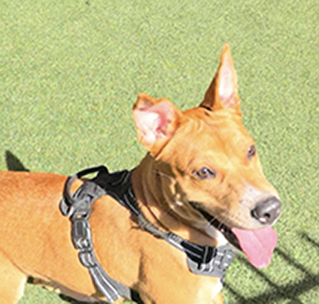

Our latest success story comes from a strong willed pup named BigBoy. He was found wondering the street with severe mange and double hip dysplasis. BigBoy had almost given up hope when he was rescued and placed into a forever home. After some time, care, and love he was a brand new pup.
Not all animals are rescued from the animal shelter or humane society. Gabriel the kitty was found lurking outside a womans house begging for food and a warm home. He found his way into her heart and into her home! He now lives inside and cuddles with his fellow rescued brothers.

This little guy named Chapo was rescued from the side of the road in far west texas. He was found trotting alone and hungry.
This cute pup is named Sophie! Her smile never wavered as she waited over 2 years in Odessa humane society for a forever home! She is currently living a care free life and enjoying all the doggie treats.
 
